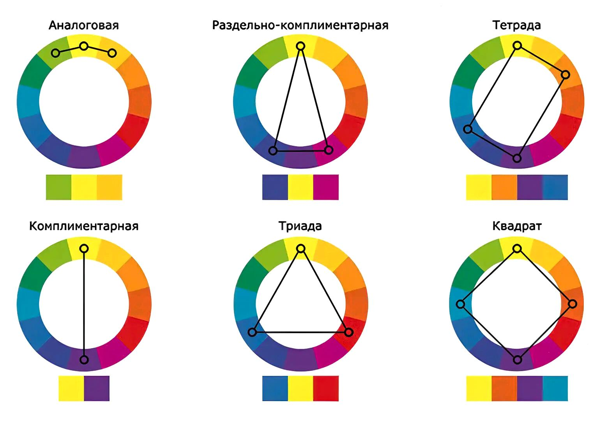

Цвет
Цвет — это не просто физическое свойство света, а мощный инструмент коммуникации в графическом дизайне. Он способен вызывать эмоции, управлять вниманием зрителя и формировать ассоциативные связи. В отличие от композиции, которая организует форму, цвет задает настроение и атмосферу издания. Понимание природы цвета позволяет дизайнеру переходить от интуитивного подбора к осознанному конструированию визуального образа.
Модели HSB/HSL и RGB
Для человеческого восприятия наиболее понятной является модель HSB (Hue, Saturation, Brightness) или ее вариация HSL (Lightness).
HEX: #FFD700
- Тон (Hue): Собственно цветовой оттенок, определяемый положением на цветовом круге (0–360 градусов).
- Насыщенность (Saturation): Чистота цвета. При снижении насыщенности оттенок становится более серым и тусклым.
- Яркость/Светлота (Brightness/Lightness): Количество белого или черного в цвете. Определяет, насколько светлым или темным выглядит объект.
HEX: #FFD700
Выбор цветовой модели зависит от носителя информации. RGB (Red, Green, Blue, Красный, Зеленый, Синий) — аддитивная модель, используемая для экранов. Цвета образуются путем сложения световых лучей. Максимальное значение всех каналов дает белый цвет.
Цветовой круг Иттена и гармонии
Цветовой круг Иттена представляет собой организацию цветов спектра по принципу их взаимосвязи. Базовый круг состоит из 12 цветов: трёх основных (красный, жёлтый, синий), трёх вторичных (оранжевый, зелёный, фиолетовый) и шести третичных.
Цветовые гармонии — это комбинации цветов, которые создают визуально сбалансированные и эстетически приятные сочетания.

Основные гармонии на цветовом круге Иттена
Контраст и доступность (Accessibility)
Эстетика не должна идти в ущерб читаемости. Контраст — это разница между двумя цветами, обеспечивающая разборчивость текста. Согласно стандартам WCAG, соотношение яркости текста и фона должно быть не менее 4.5:1 для обычного текста. Низкий контраст делает информацию недоступной для людей с нарушениями зрения и затрудняет чтение при ярком солнечном свете.
Пример текста для проверки читаемости
Интерактивная проверка контрастности по стандартам WCAG. Выберите цвета текста и фона, чтобы увидеть коэффициент контрастности.